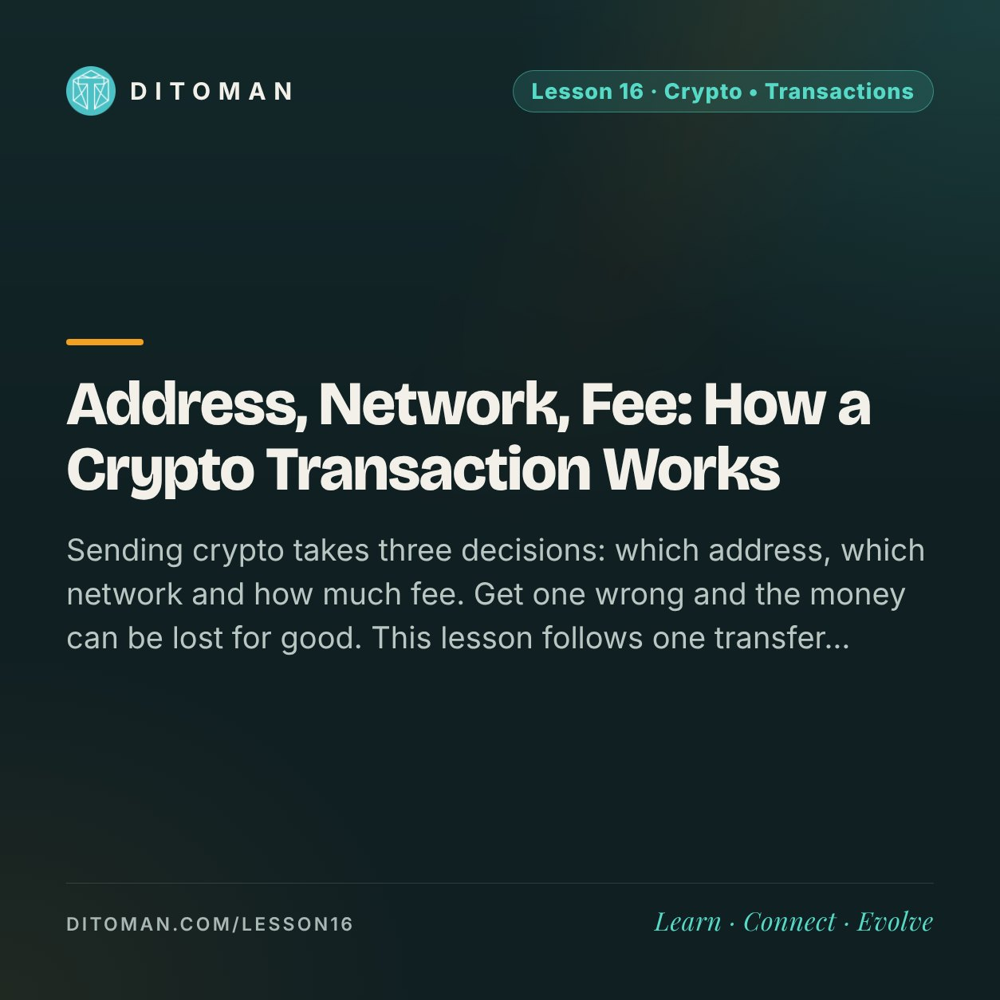

Address, Network, Fee: How a Crypto Transaction Works
العنوان والشبكة والرسوم: كيف تعمل معاملة العملات المشفّرة؟
Sending crypto takes three decisions: which address, which network and how much fee. Get one wrong and the money can be lost for good. This lesson follows one transfer from the Send button to the final confirmation.
إرسال الكريبتو فيه ثلاثة قرارات: أي عنوان، وأي شبكة، وكم رسم. وإن أخطأت في واحد قد يضيع المال إلى الأبد. يتتبع هذا الدرس تحويلًا من زر «إرسال» إلى التأكيد النهائي.
Lesson Content
محتوى الدرس
Read the lesson in English or Persian.
اقرأ الدرس بالفارسية أو الإنجليزية.
Lesson 14 followed a card payment through five companies. A crypto transfer has none of them. There is you, the receiver and a network of computers that anyone can inspect.
That makes the process simpler and stricter at the same time. Nobody stands in the middle to slow things down, and nobody stands in the middle to fix a mistake. So it is worth walking through it once, slowly, before doing it with real money.
01. The address: where it goes
An address is like an account number: a long string of letters and digits that identifies a wallet. On Ethereum and BNB Smart Chain it starts with 0x and has 42 characters. Bitcoin and Tron addresses look different.
An address is public. Sharing it is safe, because it only lets people send to you. What must stay secret is the private key or recovery phrase from Lesson 13.
Never type an address by hand. Copy and paste it, or scan the QR code, and then compare the first four and last four characters with the original. One wrong character means a different wallet.
02. The network: which road it takes
The same token can exist on several blockchains. USDT, for example, is issued on Ethereum, Tron, BNB Smart Chain and others. They are separate roads that do not connect on their own.
The rule is simple: the sender and the receiver must use the same network. If the receiver's wallet or exchange expects one network and you send on another, the coins may never appear, and getting them back ranges from difficult to impossible.
This is the most common costly mistake beginners make. Before sending, ask the receiver two things: the address and the network.
03. The fee: paying for space
Every transaction pays a fee to the people who run the network. It is often called gas. The fee pays for space in the next block, so it depends on how busy the network is, not on how much you send. Sending 10 dollars or 10,000 dollars can cost the same.
Two details surprise newcomers.
The fee is paid in the network's own coin. To send any token on BNB Smart Chain you need a little BNB. On Ethereum you need ETH, on Tron you need TRX. A wallet with tokens but none of the network coin cannot send anything.
Fees differ widely between networks and from hour to hour. Your wallet shows the fee before you confirm. Read it.
- 1Ask the receiver for the address and the network.
- 2Paste the address and compare the first four and last four characters.
- 3Choose the same network the receiver named.
- 4Check you hold the network coin for the fee, and read the fee.
- 5Send a small test, wait for it to arrive, then send the rest.
- 6Save the transaction hash and look it up in a block explorer.
04. Confirmation: when it is done
After you press Send, the transaction waits to be included in a block. Once included, it has one confirmation. Each later block adds another, and the more confirmations it has, the harder it would be to undo.
Bitcoin produces a block about every ten minutes. Many newer networks take a few seconds. Exchanges often wait for several confirmations before crediting a deposit, which is why a transfer can show as successful in your wallet and still be pending on the other side.
05. Check it yourself
Every transaction gets an ID, called a hash. Paste it into a block explorer, such as BscScan for BNB Smart Chain, and you see the sender, the receiver, the amount, the fee and the status. No company's word is needed.
If a receiver says nothing arrived, the explorer settles it. If it shows success to the right address on the right network, the coins are there.
06. There is no undo
A confirmed transaction is final. No bank, no support desk and no court order can reverse it on the blockchain. The only way back is for the receiver to send it back.
So the habits matter more than anywhere else in finance.
Send a small test first when the address is new or the amount is large.
Check address and network twice, then check the first and last characters once more on the confirmation screen.
Keep a little of the network coin for fees.
Save the transaction hash until the receiver confirms.
What to take from this
An address says where. A network says which road. Both must match the receiver.
The fee is paid in the network's own coin and depends on traffic, not on the amount.
Confirmations make a transaction final, and a final transaction cannot be reversed.
A block explorer shows the truth about any transfer.
A small test transfer is the cheapest insurance there is.
تتبّع الدرس 14 دفعة ببطاقة بين خمس شركات. وفي تحويل الكريبتو لا وجود لأي منها. نحن فقط والمستلم وشبكة من الحواسيب يستطيع أي شخص رؤيتها وفحصها.
وهذا يجعل الأمر أبسط وأكثر صرامة في آن. لا أحد في الوسط يبطّئ العمل ولا أحد يصحح الخطأ. ولهذا يستحق أن نمر عليه مرة بهدوء من أوله إلى آخره قبل فعله بمال حقيقي.
01. العنوان: إلى أين يذهب
العنوان كرقم الحساب: سلسلة طويلة من الحروف والأرقام تحدد محفظة. في إيثريوم وBNB Smart Chain 0x يبدأ بـ 0x ومكوّن من 42 حرفًا. أما عناوين البيتكوين وترون فلها شكل آخر.
العنوان عام. إعطاؤه للآخرين لا خطر فيه، لأنه يسمح لهم فقط بالإرسال إليك. أما ما يجب إخفاؤه فهو المفتاح الخاص أو عبارة الاسترداد في الدرس 13.
لا تكتب العنوان بيدك أبدًا. انسخه والصقه أو امسح رمز QR، ثم قارن الأحرف الأربعة الأولى والأربعة الأخيرة بالعنوان الأصلي. حرف خاطئ واحد يعني محفظة أخرى.
02. الشبكة: من أي طريق
يمكن أن يوجد رمز واحد على عدة بلوكتشينات. فمثلًا صدر USDT على إيثريوم وترون وBNB Smart Chain وعدة شبكات أخرى. هذه طرق منفصلة لا تتصل ببعضها تلقائيًا.
القاعدة بسيطة: يجب أن يستخدم المرسل والمستلم الشبكة نفسها. إن كانت محفظة المستلم أو منصته تنتظر شبكة ما وأرسلنا على شبكة أخرى، فقد لا تُرى العملات أبدًا، واستعادتها بين الصعب والمستحيل.
هذا أشيع خطأ مكلف عند المبتدئين. قبل الإرسال اسأل المستلم عن أمرين: العنوان والشبكة.
03. الرسم: ثمن المكان
كل معاملة تدفع رسمًا لمن يديرون الشبكة. ويسمى أيضًا «الغاز». هذا الرسم ثمن مكان في الكتلة التالية، فيتوقف على ازدحام الشبكة لا على المبلغ الذي نرسله. إرسال 10 دولارات أو 10 آلاف دولار قد يكلّف القدر نفسه.
أمران يفاجئان القادمين الجدد.
يُدفع الرسم بعملة الشبكة نفسها. لإرسال أي رمز على BNB Smart Chain تحتاج قليلًا من BNB. وعلى إيثريوم ETH وعلى ترون TRX. والمحفظة التي فيها رمز لكن ليس فيها عملة الشبكة لا تستطيع إرسال شيء.
تختلف رسوم الشبكات كثيرًا وتتغير من ساعة إلى أخرى. تعرض المحفظة الرسم قبل التأكيد. اقرأه.
- 1اسأل المستلم عن العنوان والشبكة.
- 2الصق العنوان وقارن الأحرف الأربعة الأولى والأخيرة.
- 3اختر الشبكة نفسها التي ذكرها المستلم.
- 4احتفظ بعملة الشبكة لدفع الرسم، واقرأ مبلغ الرسم.
- 5أرسل مبلغًا تجريبيًا صغيرًا، وانتظر وصوله ثم أرسل الباقي.
- 6احتفظ بتجزئة المعاملة وانظر إليها في مستكشف الكتل.
04. التأكيد: متى ينتهي
بعد الضغط على «إرسال» تنتظر المعاملة أن توضع في كتلة. وحين توضع يكون لها تأكيد واحد. وكل كتلة لاحقة تضيف تأكيدًا آخر، وكلما زادت التأكيدات صار عكسها أصعب.
يصنع البيتكوين كتلة تقريبًا كل عشر دقائق. وتستغرق كثير من الشبكات الأحدث بضع ثوانٍ. وكثيرًا ما تنتظر المنصات عدة تأكيدات قبل قيد الإيداع؛ ولذلك قد ينجح التحويل في محفظتنا ويكون «قيد الانتظار» هناك.
05. تحقق بنفسك
لكل معاملة معرّف يسمى «التجزئة» (hash). الصقه في مستكشف كتل مثل BscScan لـ BNB Smart Chain لترى المرسل والمستلم والمبلغ والرسم والحالة. لا حاجة إلى كلام أي شركة.
إذا قال المستلم إن شيئًا لم يصل، فإن مستكشف الكتل يوضح الأمر. وإذا أظهر أن المعاملة نجحت إلى العنوان الصحيح على الشبكة الصحيحة، فالعملات هناك.
06. لا يوجد زر تراجع
المعاملة المؤكدة نهائية. لا يستطيع أي بنك أو دعم أو حكم محكمة عكسها على البلوكتشين. الطريقة الوحيدة للاسترداد أن يعيد المستلم بنفسه.
ولهذا فإن العادات هنا أهم منها في أي مكان آخر في المال.
أرسل أولًا مبلغًا تجريبيًا صغيرًا، حين يكون العنوان جديدًا أو المبلغ كبيرًا.
افحص العنوان والشبكة مرتين وفي صفحة التأكيد انظر مرة أخرى إلى الأحرف الأولى والأخيرة.
احتفظ بقليل من عملة الشبكة للرسم.
احتفظ بتجزئة المعاملة حتى يؤكد المستلم وصولها.
ماذا نستنتج
العنوان يقول أين. والشبكة تقول من أي طريق. ويجب أن يطابقا ما عند المستلم.
يُدفع الرسم بعملة الشبكة نفسها ويتوقف على الازدحام لا على المبلغ.
التأكيدات تجعل المعاملة نهائية، والمعاملة النهائية لا رجعة فيها.
مستكشف الكتل يُظهر حقيقة كل تحويل.
التحويل التجريبي الصغير أرخص تأمين ممكن.
Try it with TMN
تمرّن مع TMN
TMN lives on BNB Smart Chain, so receiving it needs a BNB Smart Chain address in a personal wallet, and sending it needs a little BNB for the fee. The TMN guide walks through it with pictures.
TMN على شبكة BNB Smart Chain؛ فلاستلامه تحتاج إلى عنوان BNB Smart Chain في محفظة شخصية، ولإرساله تحتاج قليلًا من BNB للرسم. ويبيّن دليل TMN ذلك بالصور.
Key Concepts
المفاهيم الأساسية
- Wallet address
- Network (blockchain)
- Network fee (gas)
- Network coin
- Block and confirmation
- Transaction hash
- Block explorer
- Finality
- Test transfer
- عنوان المحفظة
- الشبكة (البلوكتشين)
- رسم الشبكة (الغاز)
- عملة الشبكة
- الكتلة والتأكيد
- تجزئة المعاملة
- مستكشف الكتل
- النهائية
- التحويل التجريبي
Learning Objectives
أهداف التعلّم
- Explain what an address is and why sharing it is safe.
- Say why sender and receiver must use the same network.
- Explain what the network fee pays for and in which coin it is paid.
- Describe what a confirmation is.
- Look up a transaction in a block explorer.
- List the checks to make before sending.
- اشرح ما العنوان ولماذا لا خطر في إعطائه للآخرين.
- قل لماذا يجب أن يستخدم المرسل والمستلم الشبكة نفسها.
- اشرح ثمن ماذا هو رسم الشبكة وبأي عملة يُدفع.
- قل ماذا يعني تأكيد المعاملة.
- اعثر على معاملة في مستكشف الكتل.
- عدّد الفحوص قبل الإرسال.
Quiz
اختبار قصير
Check what stayed with you. The answer is under each question.
انظر ماذا علق في ذهنك. الإجابة تحت كل سؤال.
Question 1
السؤال 1
Is it safe to share your wallet address?
هل في إعطاء عنوان المحفظة للآخرين خطر؟
A. No, it lets others take your coins
أ. نعم، يستطيع الآخرون أخذ العملات
B. Yes, it only lets others send to you
ب. لا، يسمح لهم فقط بالإرسال إليك
C. Only if you share it once
ج. لا خطر إذا أعطيته مرة واحدة فقط
Correct answer: B
الإجابة الصحيحة: ب
Question 2
السؤال 2
You hold USDT on BNB Smart Chain but no BNB. What happens when you try to send?
لديك تيثر على BNB Smart Chain لكن ليس لديك BNB. ماذا يحدث حين تريد الإرسال؟
A. The fee is taken from the USDT
أ. يُخصم الرسم من التيثر نفسه
B. It cannot be sent; the fee needs BNB
ب. لا يُرسَل؛ الرسم يحتاج BNB
C. The receiver pays the fee
ج. المستلم يدفع الرسم
Correct answer: B
الإجابة الصحيحة: ب
Question 3
السؤال 3
What does the network fee mainly depend on?
على ماذا يتوقف رسم الشبكة أكثر؟
A. How busy the network is
أ. ازدحام الشبكة
B. The amount you send
ب. المبلغ الذي ترسله
C. The receiver's country
ج. بلد المستلم
Correct answer: A
الإجابة الصحيحة: أ
Question 4
السؤال 4
You sent on a different network from the one the receiver expected. What is the likely result?
أرسلت على شبكة غير التي ينتظرها المستلم. ما النتيجة المحتملة؟
A. The networks convert it automatically
أ. تحوّلها الشبكات تلقائيًا
B. It returns to you after a day
ب. تعود إليك بعد يوم
C. The coins may not appear and may be lost
ج. قد لا تُرى العملات وتضيع
Correct answer: C
الإجابة الصحيحة: ج
Question 5
السؤال 5
How can you prove a transfer arrived?
كيف يمكن إثبات وصول تحويل؟
A. A screenshot of your wallet
أ. صورة لشاشة المحفظة
B. The transaction hash in a block explorer
ب. تجزئة المعاملة في مستكشف الكتل
C. A message from support
ج. رسالة من الدعم
Correct answer: B
الإجابة الصحيحة: ب
Sources
المصادر
- ethereum.org: Gas and fees
- Bitcoin developer guide: Transactions
- BNB Chain documentation: BNB Smart Chain overview
- BscScan: BNB Smart Chain block explorer
Block times and fees change as networks are upgraded. Always read the fee and network shown in your own wallet before confirming.
يتغير زمن الكتلة والرسوم مع تحديثات الشبكات. وقبل التأكيد اقرأ دائمًا الرسم والشبكة اللذين تعرضهما محفظتك.
نتابع معًاFollow along
New lessons are announced first on Ditoman's channels.
تُعرَض الدروس الجديدة أولًا على قنوات ديتومان.